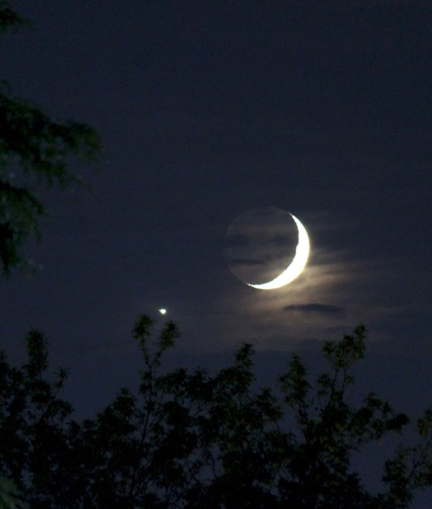

|
Welcome to a page all about the Moon! This is the home page that serves as the central hub for any moon related questions you may have. Using the tabs up above you can learn all about the moon and its affect on our planet! From the Moon itself and our close ties with it to the Tides and Eclipses, it's all covered here. Thank you for choosing Slazipedia! Come again soon!! |
If you're interested in learning more about space and other topics consider checking out the Sun page to learn more about our Star.
|  |
The Moon. When we look up at the night sky, it is the brightest, most welcoming face we see. All year the Moon shines brightly, making our cold, dark nights more bearable. For generations, we have looked up at the night sky and wondered about the mysteries our sister in the sky held. The Moon has a massive influence on our planet, from the tides and the eclipses, to the cultural impact its had on the people on it. The Moon is one of the most beautiful objects in space and its right in our back door. |
Moon Facts:
|
Lunar New Year is the beginning of a calendar year whose months are moon cycles, based on the lunar calendar or lunisolar calendar. It is celebrated in East Asian cultures as a result of the traditional lunisolar calendar of China and while each culture follows the same calendar, they each have their own traditions. In Chinese traditon, each lunar new year is associated with an animal that is on rotation every twelve years. The animals are: Goat, Monkey, Rooster, Dog, Pig, Rat, Ox, Tiger, Rabbit, Dragon, Snake, and Horse.
There are two types of Eclipses: Lunar Eclipses and Solar eclipses. Both are slightly different but they are both as beautiful to look at.
Solar Eclipses:Solar Eclipses happen when the Moon passes between the Sun and the Earth blocking sunlight for a brief period of time. Since the Earth is so much bigger than the Moon, the shadow usually covers a very small portion of the globe. You have to be in a specific part of the globe to see a solar eclipse. Solar eclipses are dangerous to look at with your bare eyes because you are essentially looking straight at the sun. You can still see the Suns corona peeking behind the Moon and the when it moves you can see the edge of the Sun. |
|
|
|
Lunar Eclipses:Lunar Eclipses happen when the Earth passes between the sun and the Moon casting a shadow on the Moon. This shadow is usually red or orange and its very pretty to look at. Just like solar eclipses, you need to be in a very specific part of the globe to see it happen. As opposed to their brighter counterparts, you can look at Lunar eclipses with your eyes. Lunar eclipses are sometimes called Blood Moons because of their unnaturally red color. They are this red for the same reason that sunsets are red, light is being refracted through Earths atmosphere. |